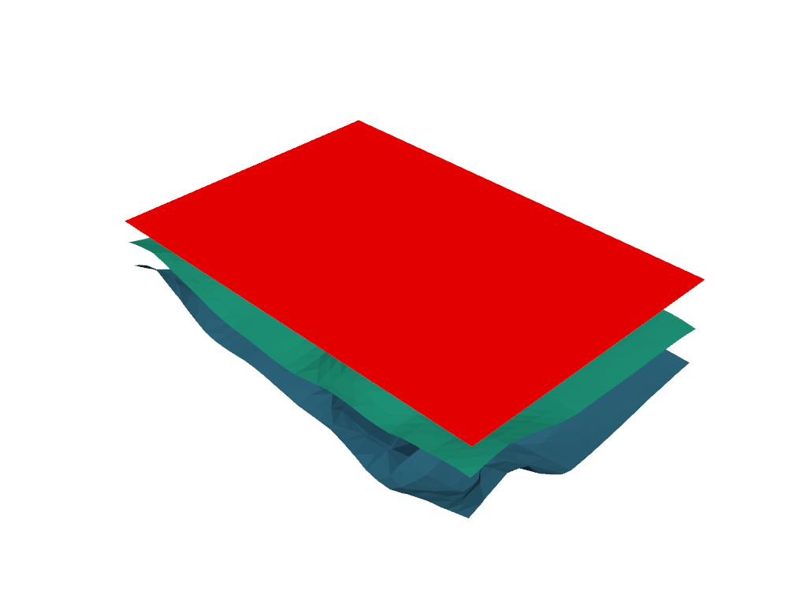

Note
Click here to download the full example code
1c. Multiple groups#
Creating a model with multiple geological features, dealing with unconformities.
from LoopStructural import GeologicalModel
from LoopStructural.datasets import load_claudius
from LoopStructural.visualisation import LavaVuModelViewer
import pandas as pd
import numpy as np
data, bb = load_claudius()
data = data.reset_index()
data.loc[:,'val']*=-1
data.loc[:,['nx','ny','nz']]*=-1
data.loc[792,'feature_name'] = 'strati2'
data.loc[792,['nx','ny','nz']] = [0,0,1]
data.loc[792,'val'] = 0
model = GeologicalModel(bb[0,:],bb[1,:])
model.set_model_data(data)
strati2 = model.create_and_add_foliation('strati2',
interpolatortype='PLI',
nelements=1e4,
solver='pyamg'
)
uc = model.add_unconformity(strati2,1)
strati = model.create_and_add_foliation('strati',
interpolatortype='PLI',
nelements=1e4,
solver='pyamg'
)
viewer = LavaVuModelViewer(model)
viewer.add_isosurface(strati2,
# nslices=5
slices=[2,1.5,1],
)
viewer.add_isosurface(strati,
slices=[0,-60,-250,-330],
paint_with=strati)
viewer.rotate([-85.18760681152344, 42.93233871459961, 0.8641873002052307])
viewer.display()
Total running time of the script: ( 0 minutes 6.379 seconds)